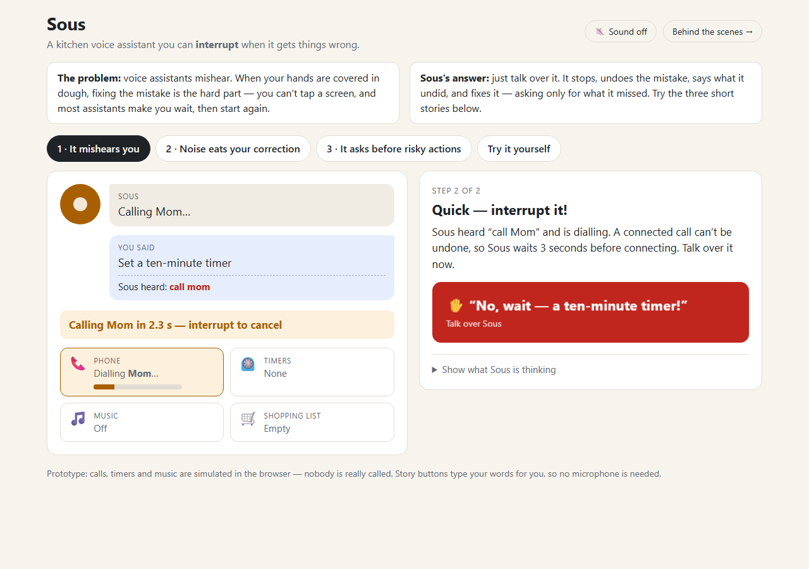
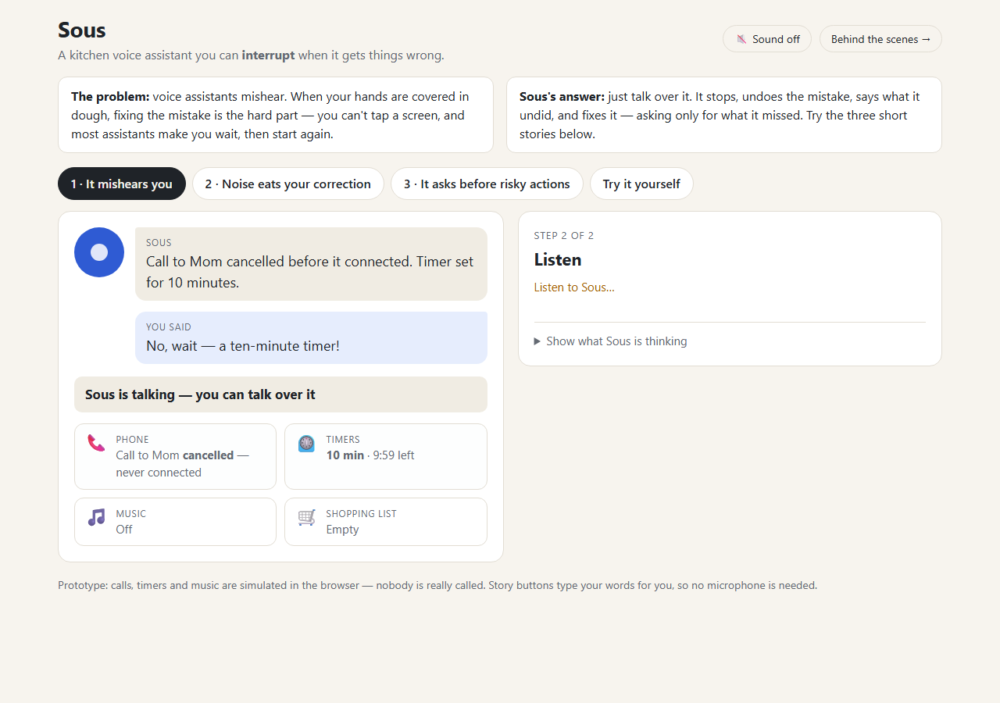
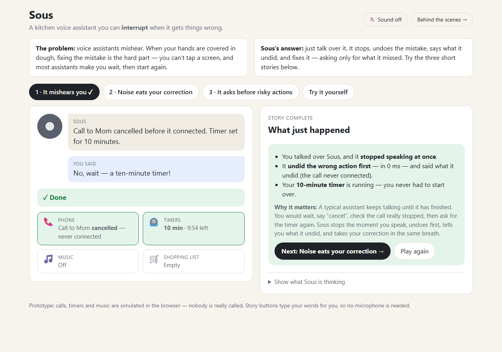

Storyboard A — it mishears, the cook interrupts
1
Hands in dough: “Set a ten-minute timer.”
Sous:
Hears “call mom”. Starts dialling, with 3 s before the call connects; shows what it heard.

2
Talks over it: “No, wait — a ten-minute timer!”
Sous:
Stops speaking, cancels the call (2 ms), sets the timer and says both in one line.

3
Back to kneading.
Sous:
Timer running; the call never connected. The demo explains what happened and why.
